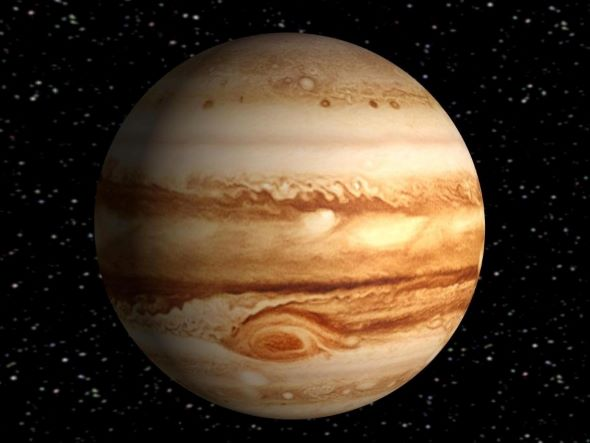

| Name of The Planet | Venus | Earth | Mars | Jupiter |
|---|---|---|---|---|
| Images of Planets |  | |||
| Mass (10^24 kg) | 4.87 | 5.97 | 0.642 | 1898 |
| Diameter (km) | 12104 | 12756 | 6792 | 142984 |
| Gravity (m/s^2) | 8.9 | 9.8 | 3.7 | 23.1 |
| Escape Velocity (km/s) | 10.4 | 11.2 | 5.0 | 59.5 |
| Length of Day (hours) | 2802 | 24 | 24.7 | 9.9 |
| Distance from Sun (10^6 km) | 108.2 | 149.6 | 228.0 | 778.5 |
| Mean Temperature (C) | 464 | 15 | -65 | -110 |